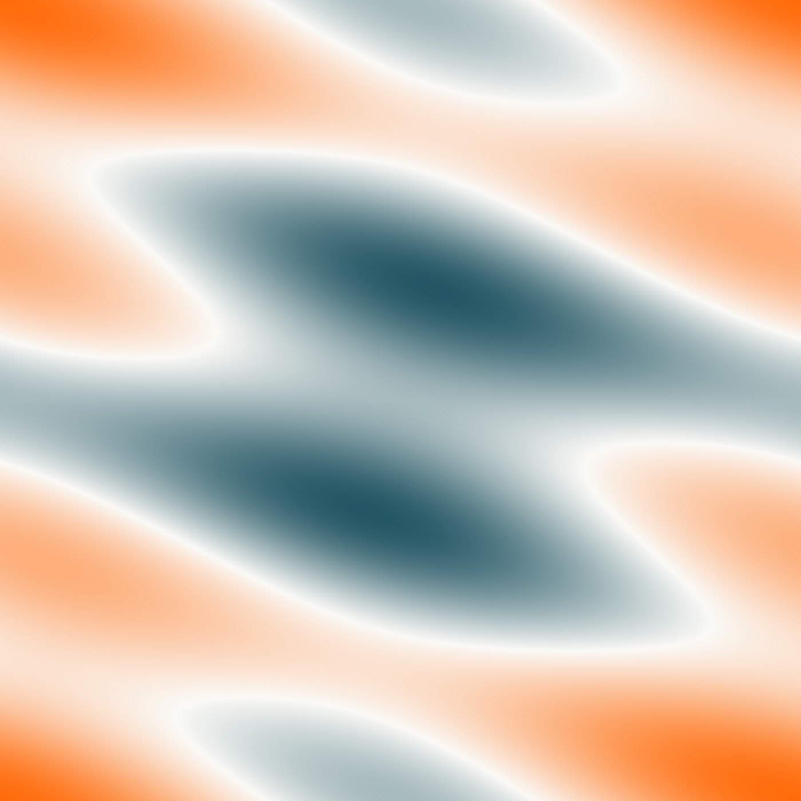

The main counterexample theorem and the two-well envelope gap are formally verified in Lean 4 with Mathlib, using only standard axioms.
Abstract
Designing a composite requires understanding which effective properties can be achieved through varying its microstructure, i.e., the spatial arrangement of given constituent materials. Hierarchical laminates, created by successive layering, reach many known limits on these properties, making it natural to ask whether they can reproduce every effective response obtainable from the same constituents. We answer this question negatively for planar two-phase composites governed by linear systems whose potentials have 16 or more components. We construct constituent material properties and, at any prescribed nontrivial phase fraction, periodic microstructures whose effective properties cannot be approximated by hierarchical laminates, even when layer directions, proportions, and the number of layering steps are unrestricted. We design the constituents so that all hierarchical laminates have equal effective energies at two prescribed mean gradients. The key step is to construct a medium whose local properties are those of horizontal laminates with smoothly varying phase fractions, but whose effective energies violate this equality. Approximating these energies with sufficiently fine periodic stripes of the original constituents yields the two-phase counterexample. This construction also gives a negative answer to the two-well relaxation problem: the minimum of two positive-definite homogeneous quadratic forms on $\mathbb{R}^{2\times32}$ can have distinct quasiconvex and rank-one convex envelopes. The counterexample and the strict inequality between the envelopes are formally verified in Lean 4.
Problem
Hierarchical laminates attain many known bounds on effective properties of composites. The open question is whether they can reproduce every effective tensor obtainable from two given constituents. A related question is whether quasiconvex and rank-one convex envelopes of two-well quadratic energies can differ.
Approach
Constituent tensors are designed so that every hierarchical laminate has equal effective energies at two prescribed mean gradients, an equality preserved under layering. A smooth medium of horizontal laminates with spatially varying phase fraction breaks this equality at fifth order in the contrast. Fine periodic stripes of the original constituents then approximate the smooth medium, giving a two-phase counterexample. Pairing gradient and complementary energies yields a two-well energy on R^{2x32}. Both main theorems are formalized in Lean 4 with Mathlib.

Figure 2: Spatially varying local laminates. (a) Color shows the local fraction t(x,y) of phase 1 in the smooth periodic medium. (b) The numbered points correspond to horizontal laminates that give equal energies at the prescribed mean gradients \xi and \eta . (c) The full medium has unequal effective energies at the same mean gradients for sufficiently small positive contrast \rho .
Results
For potentials with m>=16 components, the lamination closure is strictly smaller than the G-closure at every phase fraction 0<θ<1. A two-well energy with distinct quasiconvex and rank-one convex envelopes is also obtained. Both results are machine-checked in Lean with no admitted proofs or extra axioms.